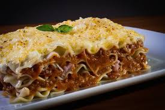

Odin Recipes
Lasagna

Description
Best Lasagna Recipe Lasagna is a classic Italian dish
featuring layers of wide, flat pasta, typically combined
with ragù (a meat sauce), béchamel (a white sauce), and
various cheeses, then baked until bubbly and golden
brown.
Ingredients
- Ricotta Cheese
- Meat
- Marinara Sauce
- Spinach
- Mozzarella
- Garlic
- Lasagna Pasta
Steps
- Boil pasta
- Cook meat with garlic, drain well and add pasta sauce. Simmmer for a few minutes
- Combine cheese mixture in a bowl
- Layer the meat sauce adn cheese with lasanga pasta and bake until the top of the lasgna is golden brown